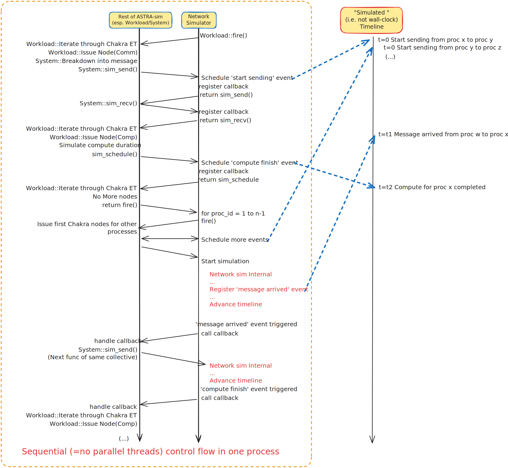

Connecting a Custom Network Backend
Overview
ASTRA-sim’s strength lies in its modularity, where users can easily switch between different backends in a plug-and-play manner. Here, we provide a description of how users can add their own network backend, instead of choosing from the Analytical or ns-3 backend that ASTRA-sim currently supports. Adding a new network backend is as easy as implementing the network API (source) and initializing the simulator (writing the main function). Users can refer to the following examples when going through this documentation.
Analytical Network Simulator: astra-sim/network_frontend/analytical
ns-3 Network Simulator: astra-sim/network_frontend/ns3
Conceptual Recap

In ASTRA-sim, the network backend should manage the simulated clock(timeline). This is largely done in two ways, depending on the operation:
Communication operations: The System layer breaks down a collective in to send and receive messages and commands the network backend to simulate these messages. Depending on the implementation and the fidelity chocie, the network backend can further break this down into packets (e.g. the ns3 simulator) or simply simulate messages as a whole (e.g. the analytical simulator). In the end, the network backend will forward the simulated clock.
Other operations: The rest of the simulator (e.g. Compute backend, memory backend, etc.) will simulate how long each operation takes and will tell the network backend the simulated duration. The network backend will forward the simulated timestamp by the simulated duration.
The Network API is the interface between the System layer and the network backend. Through this API the System layer, representing the reset of the simulator, commands the network backend. The user has to implement a network handler, which implements this Netowrk API and issues necessary commands to the actual simulator.
Note that ASTRA-sim is an event based discrete simulator. This allows the control flow to pass between the network backend and the rest of the simulator (refer to the figure above). While the control flow is within the rest of the simulator, such as the System layer or the compute backend, the simulated clock is ‘paused’, and no event is ‘taking place simultaneously’. Passing control flow is done mainly through callback functions. When the System layer issues an event to the network backend, the system layer will also define a callback function. When the network backend simulates the end of the event, it will call the callback function, passing the control flow back to the System or Workload layer. It will then move on to the next operations within the workload.
The Network API is the interface between the System layer and the network backend. Through this API the rest of the simulator commands the network backend to simulate message events or forward the simulated clock. The user has to implement a ‘network handler’, which implements this Netowrk API and issues necessary commands to the actual network simulator.
The system layer consists of multiple instances of the Sys class, where one instance corresponds to one process (rank). When constructing the Sys class instance, the user needs to provide it with a handler of the network backend that implements the Network API. For this reason, in ASTRA-sim, the main function (i.e. constructing the Sys class) is unique to each network backend and must be implemented uniquely to the network backend.
Note that ASTRA-sim is an event based discrete simulator. This allows the control flow to pass between the network backend and the rest of the simulator (While the control flow is within the rest of the simulator, such as the System layer or the compute backend, the simulated clock is ‘paused’, and no event is ‘taking place simultaneously’).
Detailed Implementaiton
Network API
We now discuss implementing the network API in detail. The network API definition can be found in the AstraNetworkAPI.hh header file.
Note
The network API functions borrow some of the terms from the MPI world. For a detailed description of each argument, please refer to the comments in the AstraNetworkAPI.hh header file linked above
sim_send: The system layer tells the network handler to simulate a network message from the handler class’ internal rank todst. The system layer also provides a callback function through themsg_handlerargument. The network handler should return thesim_sendfunction immediately after registering this callback function, and NOT wait until the message send ‘has completed’. Once the network simulator simulates that the message has left the source rank, the handler should call the callback function, passing the control back to the system layer.sim_recv: The system layer tells the network handler to expect a message fromsrcto the handler class’ internal rank. The system layer also provides a callback function through themsg_handlerargument. Similar tosim_send, the network simulator should return immediately after registering this callback function. When the message actually (is simiulated to have been) received, the network handler should call the callback function, passing the control flow back to the system layer.sim_schedule:sim_scheduleis used when ASTRA-sim wants to schedule an event on the network backend. The function arguments define the duration of the simulated event. Once the registration is completed, the handler should return immediately. Once the event, scheduleddeltatime later, is triggered, call the callback function infun_arg.sim_get_time: Get the simulated time.sim_notify_finished: Notifies the network handler that this rank’s simulation has finished. The network handler should keep track of which ranks’ simulation finishes and terminate the overall simulation appropriately.
Main function
Now that we implemented the network API, we need to write the main function that initializes everything. In this section, we will refer to the ns3 backend’s main function (defined in the ns3/AstraSimNetwork.cc file) as an example.
Here we implement the network API using the network handler class ASTRASimNetwork. The implementation of the network API is detailed in the entry.h file.
The main function should contain the following contents:
Read and parse the input files: link The configuration files for the Workload, System, Memory, and Communicator group is the same across all network backends. The simulator expects the path to these configuration files. Write argument flags that accepts these flags. While it is free for the user to use whichever flag name, for the sake of continuity we suggest users to use existing flags, such as
--system-configuration,--workload-configuration, etc. On the other hand, the user has full control on what format to use for the configuration for the network simulator.Instantiate the network handler and the
Sysclass: link For each rank, instantiate one instance of the network handler, and theSysclass. Note how we provide the reference to the network handler to theSysclass. Also provide the configuration paths that we have parsed in the above stage.Initialize the network simulator: link Parse the network configuration file, and set up the topology, etc. as necessary.
Start issuing operators from the workload: link Refer to the figure above for an overall understanding. The
fire()function tells the workload layer to start iterating through the Chakra ET and issue operators without any dependencies. Communication operators will register (but not start) message sends/receives through thesim_send/receiveAPI calls, while other operators such as compute operators will simulate the compute duration and register a ‘compute end’ event throughsim_schedule. Once the workload layer iterates through the Chakra ET and determines there are no more operations it can issue, it returns thefire()function.Start the simulated timeline in the network simulator: link We now start the network simulator to go through the simulated timeline and trigger events registered by step 4. When an event has completed, it will call the callback function passed in the function. This passes the control flow to the system layer, and then the workload layer, which will issue new nodes whose dependencies have been resolved. Once there are no more Chakra nodes to issue, the network simulator should forward the simulated timeline, and issue the next set of events in the next available timestamp